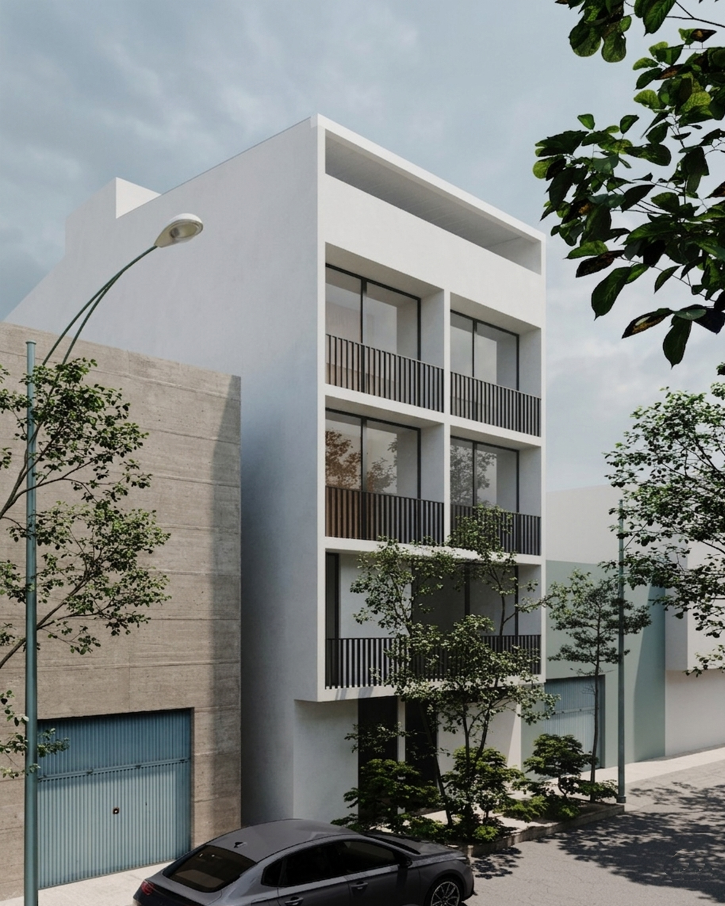
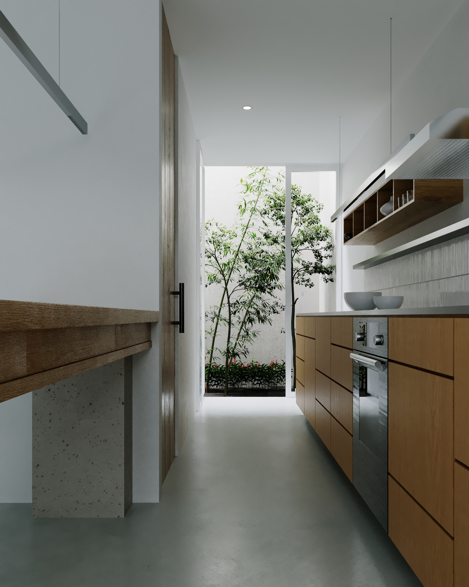
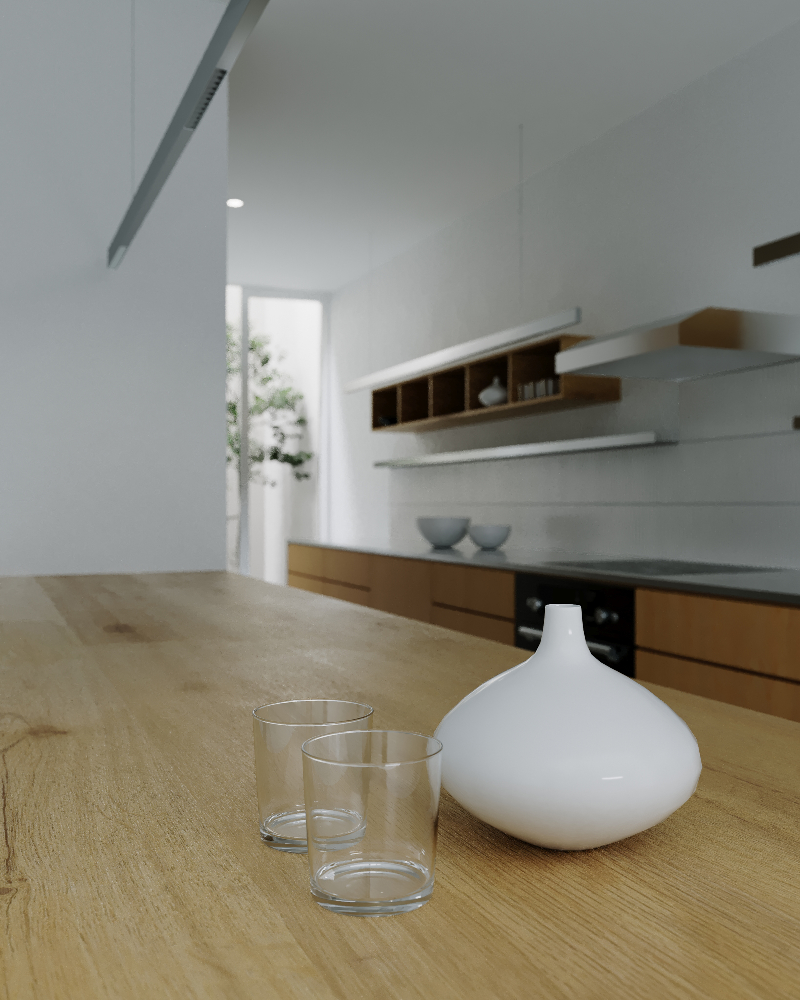

Casa Felipe
Ubicado en San Martín, Casa Felipe se presenta como un ejercicio riguroso de optimización espacial y adaptación bioclimática en la vivienda colectiva. Diseñado bajo las exigencias de un contexto tropical caracterizado por altas temperaturas y humedad, el proyecto rechaza la ornamentación superflua para concentrarse en una arquitectura permeable y de alto rendimiento ambiental.
La estrategia principal radica en la eliminación deliberada de elementos elevados y obstrucciones visuales. Al liberar los planos superiores, el proyecto potencia la fluidez de las plantas y el flujo continuo del aire, permitiendo que la ventilación cruzada disipe constantemente el calor interior. A diferencia de los entornos urbanos compactos, aquí la propuesta opta por una configuración de planta abierta con grandes vanos y balcones integrados, promoviendo una transición difusa entre el interior y el exterior sin confinar los ambientes
En la primera planta, el diseño arquitectónico se integra orgánicamente con el paisaje local imitando su exuberante geografía. Los niveles inferiores mantienen una conexión directa con patios interiores densos en vegetación y árboles nativos, inyectando frescura al conjunto y regulando el microclima interno. Con esta operación, Casa Felipe evita convertirse en una masa inerte de concreto que no respira; en su lugar, se consolida como un organismo vivo que captura la luz, abraza la naturaleza y regala una atmósfera de serenidad constante a sus habitantes.


